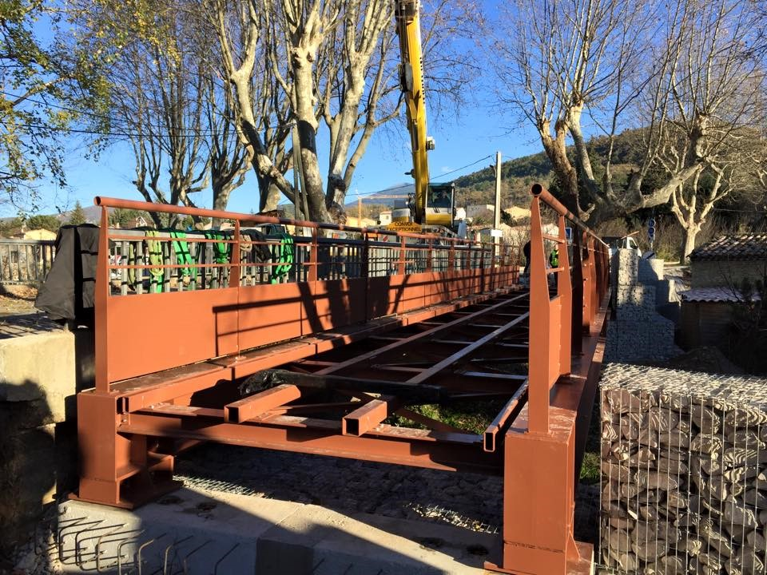
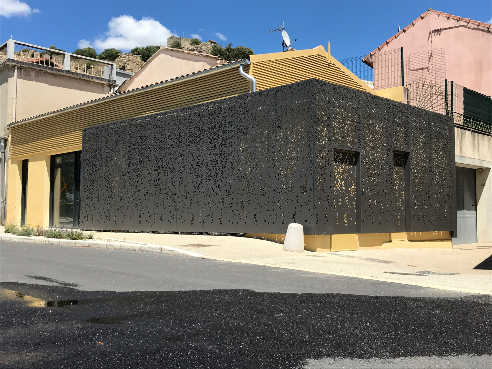

Portes, moyens d'accès en hauteur, passerelles ou plateformes : notre savoir-faire en construction métallique nous permet de répondre à tous vos besoins d'ouvrages sur mesure. Pour vous offrir un accompagnement global, nous prenons en charge vos équipements fonctionnels : fermetures, moyens d'accès, sécurisation des toitures et passerelles.
Portes sectionnelles en panneaux sandwichs avec tablier plein, vitré, semi-vitré, manuel, électrique ou automatique.
Rideaux métalliques à lames pleines, micro-perforés ou grille en acier, isolés ou non, manuels ou électriques.
Portes coupe-feu battantes, coulissantes ou à guillotine, homologuées selon la durée de résistance au feu nécessaire (1/2h, 1h ou 2h).
Portes métalliques et portes anti-panique, à 1 ou 2 vantaux, avec ou sans hublot.


Escaliers droits, quart tournant, hélicoïdaux ou tours d'escalier en acier galvanisé ou peint.
Garde-corps en tôle perforée ou barreaudage, laquage RAL standard, droits, autoportants ou rabattables — fixation en applique, sur platine ou sabot Z, avec de nombreuses personnalisations possibles.
Échelles à crinoline en acier, à sortie frontale ou latérale.
Poteaux de protection en acier, protégeant des heurts de véhicules les machines, piliers, rayonnages et rampes de chargement.
Passerelles suspendues pour l'organisation de vos surfaces industrielles, permettant la circulation en hauteur et l'accès aux cuves ou aux lignes de production. Fixations par bracons ou jambes de force, formes droites ou cintrées, laquage RAL standard. Nous réalisons également des plateformes techniques en acier.
Nous calculons et fabriquons des auvents et abris dans le prolongement de la toiture des bâtiments, pour des sites professionnels, industriels ou agricoles — sur des bâtiments existants ou intégrés dès la conception. Ils permettent de gagner de la surface à l'extérieur et d'abriter ou de stocker de la marchandise en la protégeant des aléas météorologiques.
Décrivez-nous votre besoin : nos équipes étudient et fabriquent vos ouvrages sur mesure, dans notre atelier de Robion.